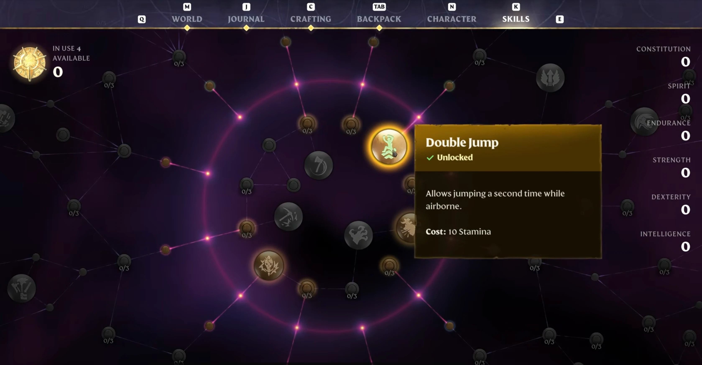

Enshrouded Starter Build — Best First 20 Skill Points for New Players
The optimal first 20 skill points for new players. Safe, versatile, and designed to get you through the first 10 hours without a single respec.
Updated | The build every new player should start with

⚡ Quick Answer: New to Enshrouded? Put your first 20 points into Survivor + Center trees. Priority: Double Jump → Water Aura → Blink → Dessert Stomach. Use Sword+Shield for safety. This build gets you through the first 10 hours comfortably and sets you up for any late-game respec.
🎯 Build Overview
✅ Strengths
- Survivable — high HP and stamina from Survivor tree
- Versatile — works with any weapon type you find
- No respec needed — flows naturally into any late-game build
- Easy to play — no complex combos or timing requirements
❌ Weaknesses
- Lower damage output than specialized builds
- No magic scaling — INT gear is wasted
- Falls off after level 15 if not transitioned
- Not optimized for group play
👤 Best For
- New players (first 10 hours)
- Solo exploration and early bosses
- Players who want to try everything before committing
- Not for: min-maxers who know exactly what they want
The Starter Build maximizes survivability and mobility — the two things that matter most when you don't know the map, the enemies, or your own playstyle yet. We invest heavily in the Survivor tree early because Double Jump and Dessert Stomach benefit every single build in the game. Even if you respec into a Mage or Archer later, those first 8 points in Survivor are never wasted.
This build comes online at level 2 (your first skill point goes to Double Jump) and carries you comfortably through the Fell Warden fight at level 7-8. By level 10, you'll have a solid foundation and can decide whether to stay balanced or pivot into a specialized build.
⭐ Skill Point Allocation
Every point in order. Follow this sequence and you'll be ahead of 90% of new players.
| # | Skill | Tree | Why This Order |
|---|---|---|---|
| 1 | Double Jump | Survivor | Exploration is 70% of early game. Reaching ledges and skipping parkour saves hours. This is the single best first point in Enshrouded. |
| 2 | Dessert Stomach | Survivor | A fourth food buff slot means more HP, more stamina, and more flexibility. Food buffs are your main stat source early on — this is essentially free stats. |
| 3 | Runner | Survivor | Reduced stamina drain while sprinting. You'll spend a lot of time running between objectives before you unlock fast travel. This cuts travel time noticeably. |
| 4 | Sneak Attack | Assassin | Bonus damage on unaware enemies. Lets you thin out camps before engaging — especially useful against groups of Scavengers in the Springlands. |
| 5 | Battle Heal | Healer | Small passive healing during combat. Reduces potion consumption and keeps you alive during longer fights. Synergizes with the Survivor tree's HP bonuses. |
| 6 | Endurance | Survivor | Flat stamina increase. More stamina = more sprinting, more dodging, more blocking. This is a stat that never stops being useful. |
| 7 | Jump Attack | Center | Bonus damage on attacks performed while jumping. Combos naturally with Double Jump for a free damage boost on every engagement. |
| 8 | Merciless Strike | Center | Increased damage against low-HP enemies. Helps finish fights faster and reduces the risk of enemies healing or calling reinforcements. |
| 9 | Vitality | Survivor | Flat HP increase. More survivability for the Fell Warden fight. With Vitality + Endurance + Dessert Stomach, your effective HP pool is about 40% larger. |
| 10 | Updraft | Assassin | Glider height boost. Combined with Double Jump, you can reach any elevated point on the map. This is where exploration truly opens up. |
| 11 | Blink | Healer | Teleport dodge replaces your roll. The single best combat upgrade in the game — dodge through enemies, through boss attacks, through walls. |
| 12 | Steady Hands | Center | Reduced weapon stamina cost. With your large stamina pool from Survivor, this means more swings before needing to back off. |
| 13 | Rebound | Center | Health regeneration after taking damage. Combined with Battle Heal, your passive healing is now meaningful in combat. |
| 14 | Shell Shock | Center | Bonus damage to armored enemies. By now you're encountering shielded Scavengers and armored Shroud enemies — this helps punch through. |
| 15 | Water Aura | Healer | Passive AoE healing aura. With this + Battle Heal + Rebound, your sustain is strong enough to face-tank normal enemies and recover between boss phases. |
| 16 | Scout | Survivor | Extended detection range for resources and enemies on the minimap. Saves time finding ore veins and Shroud Roots. |
| 17 | Aerial Strikes | Center | Extra damage while airborne. Stacks with Jump Attack — your Double Jump → attack combo now hits significantly harder. |
| 18 | Evasion | Survivor | Increased dodge invincibility frames. Makes Blink even more forgiving. At this point you're extremely hard to hit. |
| 19 | Emergency Supplies | Center | Chance to not consume potions on use. Stretches your healing supplies further during boss fights and long Shroud explorations. |
| 20 | Survival Instinct | Survivor | Damage reduction when below 30% HP. Your "oh crap" safety net. Gives you time to heal or escape when things go wrong. |
🔒 Must-Have Skills
These define the build. Get them first, in this order.
- Double Jump — game-changing mobility, first point always
- Dessert Stomach — permanent 4th food buff slot
- Battle Heal — passive combat sustain
- Updraft — exploration transforms at this point
- Blink — combat dodge upgrade, strictly better than rolling
- Water Aura — AoE healing, enables face-tanking
🔓 Flex Slots
Pick based on your playstyle. Swap these without breaking the build.
- Sneak Attack → skip if you prefer direct combat
- Scout → skip if you use external maps for resources
- Emergency Supplies → swap for more damage if you're confident
⚔ Weapons & Equipment
The right weapon makes or breaks a build. Here's what to use — and what to skip.
| Priority | Weapon | Type | Why This Build | Crafting |
|---|---|---|---|---|
| Best | Noble Sword | 1H Sword | Fast attack speed + pairs with shield for extra defense. The most forgiving weapon for new players. | Copper Bars, Wood Planks |
| Best | Guardian Shield | Shield | Parry window + block stamina reduction. Lets you learn boss patterns safely by blocking instead of dodging. | Iron Bars, Leather |
| Good | Wailing Blade | 2H Sword | Highest raw damage if you're comfortable without a shield. Cleave hits 3 targets — great for group enemies. | Iron Bars, Shroud Core |
| Good | Ignited Bow | Bow | Ranged option for pulling enemies and softening bosses before melee engagement. | Wood, Fire Essence |
| Skip | Scorching Wand | Magic | This build has zero INT investment. Wand damage will be negligible. | — |
🛡️ Armor Preference
Prioritize physical defense and stamina regen. Avoid armor with INT bonuses — this build doesn't scale with magic. Hunter armor (early) → Blacksmith armor (mid) is the ideal progression.
💀 Combat & Boss Strategy
How this build performs against every Enshrouded boss — and how to adjust your approach.
| Boss | Difficulty | Strategy With This Build |
|---|---|---|
| Fell Warden First Boss | 🟢 | Very forgiving. Block his charge with your shield, Double Jump over the ground slam, punish during recovery. With Vitality + Battle Heal, you can eat a hit and keep going. |
| Wyvern Flying | 🟡 | Bring Ignited Bow for the aerial phases. Updraft + Double Jump helps close vertical distance. Blink through its dive-bomb attack. Keep Water Aura up for passive healing. |
| Matron Poison/Shroud | 🟡 | Shroud timer is your real enemy here. Emergency Supplies helps stretch potions. Stay close to Shroud exits. Blink is invaluable for dodging the poison cone attack. |
| Scavenger Warlord Humanoid | 🟠 | This is where the starter build starts to show its limits. The Warlord's fast dual-wield combos require precise dodging. Shield is essential. Consider transitioning to Melee Tank before this fight. |
| Fell Dragon Endgame | 🔴 | Not recommended with the pure starter build. You need specialized damage output. Respec into Melee Tank, Mage DPS, or Archer Assassin before attempting. |
| Hollow King Secret | 🔴 | Same as Fell Dragon — this is endgame content that requires a specialized build. The starter build is designed to get you here, not beat it. |
🗺️ Leveling Roadmap
When to take each skill — from fresh spawn to your first respec decision.
🟢 Early Game
~0-10 skill points
Focus: mobility and survivability
- #1 Double Jump — transforms exploration
- #2 Dessert Stomach — permanent stat boost
- #3 Runner — less time walking
- #4-5 Sneak Attack + Battle Heal — combat baseline
- #6-7 Endurance + Jump Attack — stamina + damage
- #8 Merciless Strike — finish fights faster
- #9-10 Vitality + Updraft — HP pool + flight
🟡 Mid Game
~10-18 skill points
Focus: combat power and sustain
- #11 Blink — combat dodge upgrade
- #12 Steady Hands — more melee uptime
- #13-14 Rebound + Shell Shock — sustain + armor pen
- #15 Water Aura — passive AoE healing
- #16-18 Scout + Aerial Strikes + Evasion — QoL + damage + defense
🔴 Late Game
18+ skill points
Decision point: stay balanced or specialize?
- #19 Emergency Supplies — potion efficiency
- #20 Survival Instinct — safety net
- Option A: Respec into Melee Tank, Mage DPS, or Archer Assassin
- Option B: Stay flexible — add points based on the content you're doing
⚠️ Common Mistakes
Don't waste skill points. These are the traps players fall into with this build.
Mistake #1: Taking damage skills before mobility skills
New players often rush combat skills because they want to hit harder. But Enshrouded's early game is 70% exploration and 30% combat. Double Jump and Updraft save you more time and frustration than any damage node. A dead player with high DPS does zero damage — stay alive first, optimize damage later.
Fix: Points 1-4 should always be Double Jump → Dessert Stomach → Runner → Sneak Attack/Battle Heal. No exceptions.
Mistake #2: Ignoring the Center tree entirely
The Center tree has no flashy skills, but its passives (Jump Attack, Merciless Strike, Steady Hands, Shell Shock) are efficient, low-investment damage boosts. Skipping them means you'll feel weak against armored enemies around level 10-12.
Fix: Sprinkle Center passives between your Survivor and Healer picks. Points 7, 8, 12, and 14 in the table above are all Center — don't skip them.
Mistake #3: Waiting too long to respec into a specialized build
The starter build is designed to get you to level 15 comfortably. After that, the game expects you to have a focused build with synergy between your skills and weapon choice. If you're still running the starter build at level 18 against the Scavenger Warlord, you're making the fight harder than it needs to be.
Fix: Around level 12-15, look at the other Build Guides and decide which direction you want to go. Respec costs are still low at this point.
Mistake #4: Using a shield but not learning parry timing
The Guardian Shield's parry window is generous, but if you're just holding block and never parrying, you're missing half the shield's value. Parrying staggers enemies and opens them for critical damage.
Fix: Practice parry timing on the slow Scavenger enemies in the Springlands. Their telegraphed overhead swing is the perfect training tool.
🔄 Advanced Variants
Once you hit max level and have spare skill points, try these variations.
🧪 Explorer Variant
Swap: Shell Shock → Glider Efficiency (Survivor)
Why: Prioritizes traversal speed over combat for resource-gathering sessions.
Best for: Farming ore, finding Shroud Roots, unlocking the map.
🧪 Bruiser Variant
Swap: Scout + Emergency Supplies → 2 points in Tank tree
Why: Adds damage reduction and aggro control for a more aggressive melee playstyle.
Best for: Players who are comfortable dodging and want more damage uptime.
Related Builds
Melee Tank Build
Face-tank bosses with Tank + Survivor trees.
Mage DPS Build
Ranged AoE devastation with Mage + Healer trees.
Full Skill Tier List
Compare every skill before you commit your next respec.
Safest New Player Build
Survivor + Center trees with Sword+Shield give you the highest survivability while you learn the game's mechanics, map, and enemies.
Sets Up Any Late-Game Path
Every point in this build is useful for later specializations. Double Jump, Water Aura, and Blink are core skills in every endgame build.
Free Respec When You're Ready
Hit level 12-15 and want to specialize? Respec at any Flame Altar. The starter build costs nothing to abandon — every skill point was useful.
📖 Related Guides
🛡️ Melee Tank Build ⭐ Best Skills Tier List 🛡️ Armor Sets & Stats 📖 Beginner Walkthrough
⚙️ Build Loadout Details
Gear, gems, food, and combat rotation — everything you need to run this build at full power.
🛡️ Equipment Slots
| Slot | Best Item | Notes |
|---|---|---|
| Head | Rising Fighter Helm | Phys +8, early craft |
| Chest | Rising Fighter Chest | Phys +15, best early defense |
| Gloves | Rising Fighter Gloves | Phys +5 |
| Pants | Rising Fighter Pants | Phys +10 |
| Boots | Rising Fighter Boots | Phys +5 |
| Shield | Any wooden shield | Block stability matters more than stats early |
💎 Gem Recommendations
💎 Gem of Burning
Slot: Any weapon
Why: Reliable fire DoT. Best early-game gem — craftable and works on everything.
💎 Gem of Cutting
Slot: Sword (if available)
Why: Physical bleed stacks with melee attacks. Skip if you haven't found one yet.
🍖 Food Buff Combination
| Category | Recommended | Effect |
|---|---|---|
| Meat | Grilled Meat | +Max HP — your survival buffer |
| Grain | Cooked Corn | +Melee damage — helps everything die faster |
| Liquid | Water | +Stamina regen — more blocking, more swinging |
⚔️ Combat Rotation
Open with Shield Bash → light attack combo (3 hits) → Block when enemy attacks → Merciless Attack on stun. Repeat. For groups: kite them into a line, then swing through all 3 targets.
- 2026-07-18 — Updated for Update 8: Double Jump now in Center tree. HowTo schema. Image added.
- 2026-07-10 — Initial starter build. First 20 skill points for new players.
Was this build guide helpful?